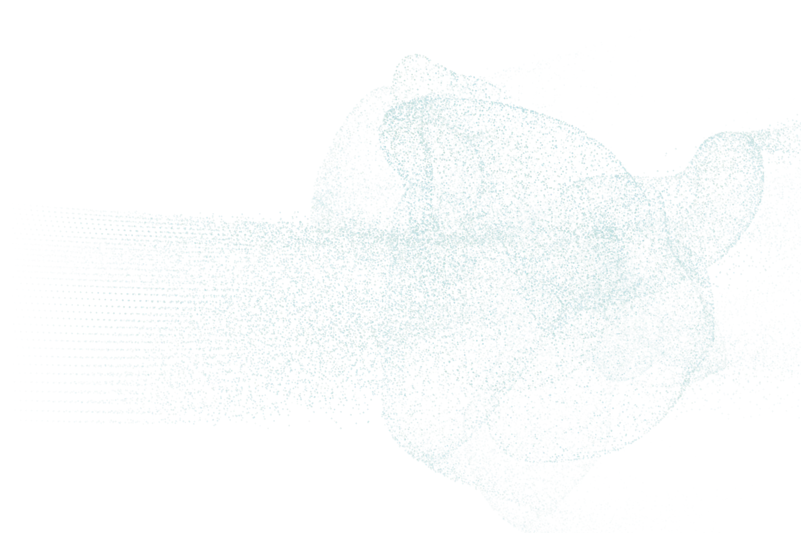

Many forms, still becoming.
Eleven particle studies develop into changing surfaces and branching networks, with nine seconds of fully defined motion before dispersing.
Compare the studies at the same moment. Changing a variation preserves the timeline.

Original artwork · a still for this variation is unavailable.
- 00–02 sLattice to disorder
- 02–06 sGradual formation
- 06–11 sDefinition develops
- 11–20 sPeak morphing
- 20–24 sWind dispersal
- 24–25 sEmpty frame
An abstract study of changing geometry. The changing structures and particle motion are art-directed.
The Viscera still is shown. JavaScript is required to compare myriad studies and play their motion.